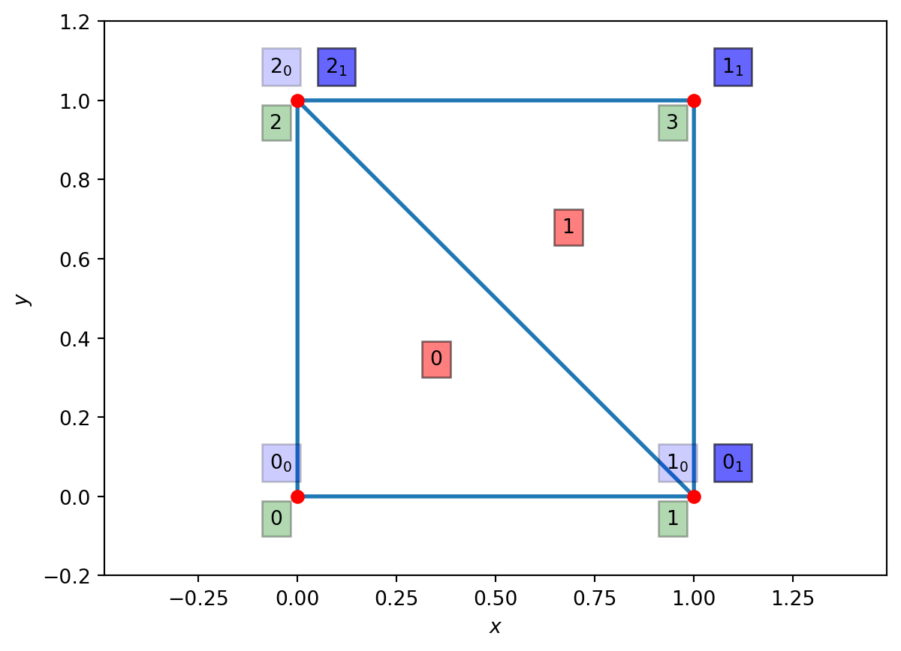
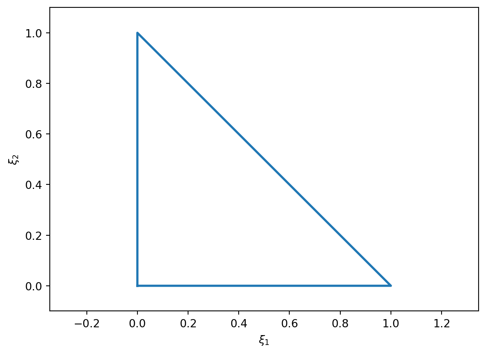
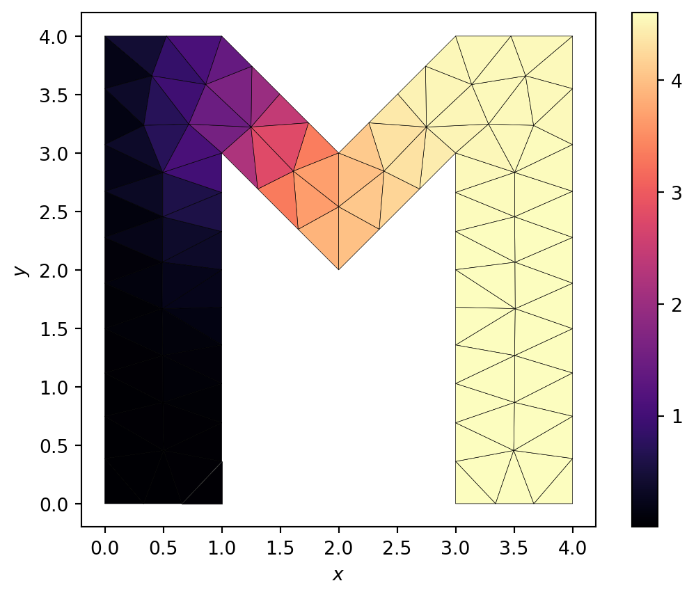

4 Two dimensions
We’ve looked at the problem of finding the steady state solution of pollution diffusing in one dimension. Now let’s move on to finding the distribution in two dimensions. From this the generalisation to higher dimensions is “straightforward”.
The steady state pollution distribution \(\Psi(x, y)\) in cartesian coordinates satisfies
\[ \nabla^2 \Psi + S(\mathbf{x}) = \left( \partial_{xx} + \partial_{yy} \right) \Psi + S(\mathbf{x}) = 0. \tag{4.1}\]
We’ll fix the distribution to be zero at the left edge, \(\Psi(0, y) = 0\). We’ll allow pollution to flow out of the other edges, giving the boundary conditions on all edges as
\[ \begin{aligned} \Psi(0, y) &= 0, & \partial_x \Psi(1, y) &= 0, \\ \partial_y \Psi(x, 0) &= 0, & \partial_y \Psi(x, 1) &=0. \end{aligned} \tag{4.2}\]
Once again we want to write down the weak form by integrating by parts. To do that we rely on the divergence theorem,
\[ \int_{\Omega} \text{d}\Omega \, \nabla_i \Psi = \int_{\Gamma} \text{d}\Gamma \, \Psi n_i. \tag{4.3}\]
Here \(\Omega\) is the domain (which in our problem is the square, \(x, y \in [0, 1]\)) and \(\Gamma\) its boundary (in our problem the four lines \(x=0, 1\) and \(y=0, 1\)), whilst \(\mathbf{n}\) is the (inward-pointing) normal vector to the boundary.
We then multiply the strong form of the steady state equation by a weight function \(w(x, y)\) and integrate by parts, using the divergence theorem, to remove the second derivative. To enforce the boundary conditions effectively we again choose the weight function to vanish where the value of the temperature is explicitly given, i.e. \(w(0, y) = 0\). That is, we split the boundary \(\Gamma\) into a piece \(\Gamma_D\) where the boundary conditions are in Dirichlet form (the value \(\Psi\) is given) and a piece \(\Gamma_N\) where the boundary conditions are in Neumann form (the value of the normal derivative \(n_i \nabla_i T\) is given). We then enforce that on \(\Gamma_D\) the weight function vanishes.
For our problem, this gives
\[ \int_{\Omega} \text{d} \Omega \, \nabla_i w \nabla_i \Psi = \int_{\Omega} \text{d} \Omega \, w S. \tag{4.4}\]
Re-writing for our explicit domain and our Cartesian coordinates we get
\[ \int_0^1 \text{d} y \, \int_0^1 \text{d} x \, \left( \partial_x w \partial_x \Psi + \partial_y w \partial_y \Psi \right) = \int_0^1 \text{d} y \, \int_0^1 \text{d} x \, w(x, y) S(x, y). \tag{4.5}\]
This should be compared to the one dimensional case
\[ \int_0^1 \text{d}x \, \partial_x w(x) \partial_x \Psi(x) = \int_0^1 \text{d}x \, w(x) S(x). \tag{4.6}\]
We can now envisage using the same steps as the one dimensional case. Split the domain into elements, represent all functions in terms of known shape functions on each element, assemble the problems in each element to a single matrix problem, and then solve the matrix problem.
4.1 Elements
We now need to split the domain into subdomains - elements. Constructing a good grid for a general case is a hard problem for which there are many complex solvers available. In our case we are going to use one simple approach: triangulate the domain by using equal sized triangles.
What we’re doing here is
- Providing a list of nodes by their global coordinates.
- Providing the (integer) element node array
IENwhich says how the elements are linked to the nodes.
We have that for element \(e\) and local node number \(a = 0, 1, 2\) the global node number is \(A = IEN(e, a)\). This notation is sufficiently conventional that matplotlib recognizes it with its triplot/tripcolor/trisurf functions. In this case we have
IEN = np.array([[0, 1, 2],
[1, 3, 2]])which says that the first element (element 0) is made of the (global) nodes numbered 0, 1, and 2, which the second element (element 1) is made of the (global) nodes numbered 1, 3, and 2. It is convention that the nodes are ordered in the anti-clockwise direction as the local number goes from 0 to 2.
The plot shows the
- element numbers in the red boxes
- the global node numbers in the green boxes
- the local element numbers in the blue boxes (the subscript shows the element number).
We will need one final array, which is the \(ID\) or (integer) destination array. This links the global node number to the global equation number in the final linear system. As the order of the equations in a linear system doesn’t matter, this essentially encodes whether a node should have any equation in the linear system. Any node on \(\Gamma_D\), where the value of the temperature is given, should not have an equation. In the example above the left edge is fixed, so nodes 0 and 2 lie on \(\Gamma_D\) and should not have an equation. Thus in our case we have
ID = np.array([-1, 0, -1, 1])In the one dimensional case we used the location matrix or \(LM\) array to link local node numbers in elements to equations. With the \(IED\) and \(ID\) arrays the \(LM\) matrix is strictly redundant, as \(LM(a, e) = ID(IEN(e, a))\). However, it’s still standard to construct it:
LM = np.zeros_like(IEN.T)
for e in range(IEN.shape[0]):
for a in range(IEN.shape[1]):
LM[a,e] = ID[IEN[e,a]]
LMarray([[-1, 0],
[ 0, 1],
[-1, -1]])4.2 Function representation and shape functions
We’re going to want to write our unknown functions \(\Psi, w\) in terms of shape functions. These are easiest to write down for a single reference element, in the same way as we did for the one dimensional case where our reference element used the coordinates \(\xi\). In two dimensions we’ll use the reference coordinates \(\xi_1, \xi_2\), and the standard “unit” triangle shown in (Figure 4.2).

The shape functions on this triangle are
\[ \begin{aligned} N_0(\xi_1, \xi_2) &= 1 - \xi_1 - \xi_2, \\ N_1(\xi_1, \xi_2) &= \xi_1, \\ N_2(\xi_1, \xi_2) &= \xi_2. \end{aligned} \tag{4.7}\]
The derivatives are all either \(0\) or \(\pm 1\).
As soon as we have the shape functions, our weak form becomes
\[ \begin{split} \sum_A T_A \int_{\Omega} \text{d}\Omega \, \left( \partial_{x} N_A (x, y) \partial_{x} N_B(x, y) + \partial_{y} N_A(x, y) \partial_{y} N_B(x, y) \right) = \\ \int_{\Omega} \text{d}\Omega \, N_B(x, y) f(x, y). \end{split} \tag{4.8}\]
If we restrict to a single element the weak form becomes
\[ \begin{split} \sum_A T_A \int_{\triangle} \text{d}\triangle \, \left( \partial_{x} N_A (x, y) \partial_{x} N_B(x, y) + \partial_{y} N_A(x, y) \partial_{y} N_B(x, y) \right) = \\ \int_{\triangle} \text{d}\triangle \, N_B(x, y) f(x, y). \end{split} \tag{4.9}\]
We need to map the triangle and its \((x, y) = \mathbf{x}\) coordinates to the reference triangle and its \((\xi_1, \xi_2) = \symbf{\xi}\) coordinates. We also need to work out the integrals that appear in the weak form. We need the transformation formula
\[ \int_{\triangle} \text{d}\triangle \, \phi(x, y) = \int_0^1 \text{d}\xi_2 \, \int_0^{1-\xi_2} \text{d}\xi_1 \, \phi \left( x(\xi_1, \xi_2), y(\xi_1, \xi_2) \right) j(\xi_1, \xi_2), \tag{4.10}\]
where the Jacobian matrix \(J\) is
\[ J = \left[ \frac{\partial \mathbf{x}}{\partial \symbf{\xi}} \right] = \begin{pmatrix} \partial_{\xi_1} x & \partial_{\xi_2} x \\ \partial_{\xi_1} y & \partial_{\xi_2} y \end{pmatrix} \tag{4.11}\]
and hence the Jacobian determinant \(j\) is
\[ j = \det{J} = \det \left[ \frac{\partial \mathbf{x}}{\partial \symbf{\xi}} \right] = \det \begin{pmatrix} \partial_{\xi_1} x & \partial_{\xi_2} x \\ \partial_{\xi_1} y & \partial_{\xi_2} y \end{pmatrix}. \tag{4.12}\]
We will also need the Jacobian matrix when writing the derivatives of the shape functions in terms of the coordinates on the reference triangle, i.e.
\[ \begin{pmatrix} \partial_x N_A & \partial_y N_A \end{pmatrix} = \begin{pmatrix} \partial_{\xi_1} N_A & \partial_{\xi_2} N_A \end{pmatrix} J^{-1} . \tag{4.13}\]
The integral over the reference triangle can be directly approximated using, for example, Gauss quadrature. To second order we have
\[ \begin{split} \int_0^1 \text{d}\xi_2 \, \int_0^{1-\xi_2} \text{d}\xi_1 \, \psi \left( x(\xi_1, \xi_2), y(\xi_1, \xi_2) \right) \simeq \\ \frac{1}{6} \sum_{j = 1}^{3} \psi \left( x((\xi_1)_j, (\xi_2)_j), y((\xi_1)_j, (\xi_2)_j) \right) \end{split} \tag{4.14}\]
where
\[ \begin{aligned} (\xi_1)_1 &= \frac{1}{6}, & (\xi_2)_1 &= \frac{1}{6}, \\ (\xi_1)_2 &= \frac{4}{6}, & (\xi_2)_2 &= \frac{1}{6}, \\ (\xi_1)_3 &= \frac{1}{6}, & (\xi_2)_3 &= \frac{4}{6}. \end{aligned} \tag{4.15}\]
Finally, we need to map from the coordinates \(\symbf{\xi}\) to the coordinates \(\mathbf{x}\). This is straightforward if we think of writing each component \((x, y)\) in terms of the shape functions. So for element \(e\) with node locations \((x^e_a, y^e_a)\) for local node number \(a = 0, 1, 2\) we have
\[ \begin{aligned} x &= x^e_0 N_0(\xi_1, \xi_2) + x^e_1 N_1(\xi_1, \xi_2) + x^e_2 N_2(\xi_1, \xi_2), \\ y &= y^e_0 N_0(\xi_1, \xi_2) + y^e_1 N_1(\xi_1, \xi_2) + y^e_2 N_2(\xi_1, \xi_2). \end{aligned} \tag{4.16}\]
4.3 Algorithm
The steps needed to solve this case closely follow the algorithm in one dimension. The outline algorithm becomes
- Set up the grid, including the mapping between elements and nodes (
IEN) and between elements and equations (ID). - Set up a boundary value structure (in Python a dictionary would work).
- Set up the location matrix \(LM\).
- Set up arrays, initially all zero, for the global stiffness matrix and for vector.
- For each element:
- Form the element stiffness matrix \(k^e_{ab}\).
- Form the element force vector \(f^e_b\).
- Add the contributions to the global stiffness matrix and force vector.
- Modify using the boundary values if needed.
- Solve \(K \symbf{\psi} = \mathbf{F}\).
The key difference is the complexity of mapping from a general element (triangle) to the reference element (triangle) on which all the coefficients are known. The key steps are:
- Write a function that, given \(\symbf{\xi}\), returns that shape functions at that location.
- Write a function that, given \(\symbf{\xi}\), returns the derivatives of the shape functions at that location.
- Write a function that, given the (global) locations \(\mathbf{x}\) of the nodes of a triangular element and the local coordinates \(\symbf{\xi}\) within the element returns the corresponding global coordinates.
- Write a function that, given the (global) locations \(\mathbf{x}\) of the nodes of a triangular element and the local coordinates \(\symbf{\xi}\), returns the Jacobian matrix at that location.
- Write a function that, given the (global) locations \(\mathbf{x}\) of the nodes of a triangular element and the local coordinates \(\symbf{\xi}\), returns the determinant of the Jacobian matrix at that location.
- Write a function that, given the (global) locations \(\mathbf{x}\) of the nodes of a triangular element and the local coordinates \(\symbf{\xi}\) within the element returns the derivatives \(\partial_\mathbf{x} N_a = J^{-1} \partial_{\symbf{\xi}} N_a\).
- Write a function that, given a function \(\psi({\symbf{\xi}})\), returns the quadrature of \(\psi\) over the reference triangle.
- Write a function that, given the (global) locations of the nodes of a triangular element and a function \(\phi(x, y)\), returns the quadrature of \(\phi\) over the element.
- Write a function to compute the coefficients of the stiffness matrix for a single element, \[ k^e_{ab} = \int_{\triangle^e} \text{d}\triangle^e \, \left( \partial_{x} N_a (x, y) \partial_{x} N_b(x, y) + \partial_{y} N_a(x, y) \partial_{y} N_b(x, y) \right). \]
- Write a function to compute the coefficients of the force vector for a single element, \[ f^e_b = \int_{\triangle^e} \text{d}\triangle^e \, N_b(x, y) f(x, y). \tag{4.17}\]
4.4 Grid generation
The final, essential, topic that has not been covered is how to generate a grid. Good grid generators or meshers are generally hard (look at, for example, gmesh or dmsh for examples): here is a very simple one for this specific problem.
def generate_2d_grid(Nx):
Nnodes = Nx+1
x = np.linspace(0, 1, Nnodes)
y = np.linspace(0, 1, Nnodes)
X, Y = np.meshgrid(x,y)
nodes = np.zeros((Nnodes**2,2))
nodes[:,0] = X.ravel()
nodes[:,1] = Y.ravel()
ID = np.zeros(len(nodes), dtype=np.int64)
boundaries = dict() # Will hold the boundary values
n_eq = 0
for nID in range(len(nodes)):
if np.allclose(nodes[nID, 0], 0):
ID[nID] = -1
boundaries[nID] = 0 # Dirichlet BC
else:
ID[nID] = n_eq
n_eq += 1
if ( (np.allclose(nodes[nID, 1], 0)) or
(np.allclose(nodes[nID, 0], 1)) or
(np.allclose(nodes[nID, 1], 1)) ):
boundaries[nID] = 0 # Neumann BC
IEN = np.zeros((2*Nx**2, 3), dtype=np.int64)
for i in range(Nx):
for j in range(Nx):
IEN[2*i+2*j*Nx , :] = (i+j*Nnodes,
i+1+j*Nnodes,
i+(j+1)*Nnodes)
IEN[2*i+1+2*j*Nx, :] = (i+1+j*Nnodes,
i+1+(j+1)*Nnodes,
i+(j+1)*Nnodes)
return nodes, IEN, ID, boundariesThe results of using a more complex mesh generator (in this case dmsh) on a more complex domain, but still solving the heat equation using exactly the functions outlined in the exercise below, is shown in (Figure 4.3).

dmsh for a more general polygonal domain. The heat equation is solved with a Gaussian source. The boundary at \(x=0\) is held fixed at \(\Psi=0\). All other boundaries use Neumann boundary conditions where the flux vanishes. The function that solves the finite element method here is identical to that on the simpler grids.
4.5 Exercise
Exercise 4.1
- Write a function that, given a list of nodes and the \(IEN\) and \(ID\) arrays, and also given the source function \(S\), uses the finite element method to return \(\symbf{\Psi}\).
- Test on the system \(S(x, y) = 1\) with exact solution \(\Psi = x(1-x/2)\).
- For a more complex case with the same boundary conditions try \[ S(x, y) = 2 x (x - 2) (3 y^2 - 3 y + \tfrac{1}{2}) + y^2 (y - 1)^2 \tag{4.18}\]
with exact solution
\[ \Psi(x, y) = x (1 - \tfrac{x}{2}) y^2 (1 - y)^2. \tag{4.19}\]